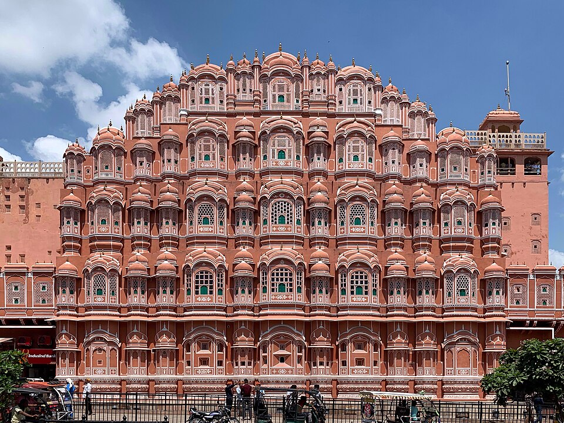
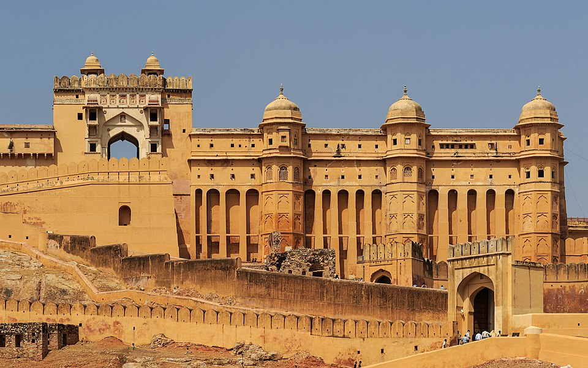

Jaipur Stop 2
Jaipur
Rajasthan — The Pink City
Jaipur earned its nickname "The Pink City" when Maharaja Ram Singh painted the entire old city terracotta pink in 1876 to welcome Prince Albert. Today it is a UNESCO World Heritage City filled with grand palaces, hilltop forts, and vibrant bazaars.

Hawa Mahal – Palace of Winds
This 5-story facade has 953 small windows designed so royal ladies could watch street festivals unseen.

Amber Fort
Perched on a rocky hill above Maota Lake — a stunning blend of Hindu and Mughal architecture.
Quick Facts
- Founded: 1727 by Maharaja Sawai Jai Singh II
- Nickname: The Pink City
- UNESCO World Heritage City (2019)
- Part of India's Golden Triangle
- Famous for: gems, textiles, block prints
- Population: ~3.5 million